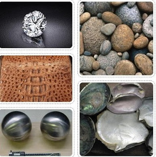

ฉะนั้นการรู้จักสังเกตธรรมชาติที่อยู่รอบ ๆ ตัวและการรู้จักเลือกสรรส่วนประกอบจากธรรมชาติมาจัดองค์ประกอบทางศิลปะนั้น จึงเป็นวิธีที่ง่ายและดีที่สุดในการสร้างสรรค์งานศิลปะทัศนธาตุ ประกอบด้วย 1.จุด ( point ) หมายถึงสิ่งที่ปรากฏบนพื้นระนาบที่มีขนาดเล็กที่สุด ไม่มีความกว้าง ความยาว ความสูง ความหนา หรือความลึก จุดเป็นทัศนธาตุที่เล็กที่สุดและมีมิติเป็นศูนย์ จุดสามารถแสดงตำแหน่งได้เมื่อมีบริเวณว่างรองรับ จุดถือเป็นทัศนธาตุหรือพื้นฐานเบื้องต้นที่สุดในการสร้างงานทัศนศิลป์ จุดเป็นต้นกำเนิดของทัศนธาตุอื่นๆ เช่น เส้น รูปร่าง รูปทรงและพื้นผิว ค่าความอ่อนแก่ แสงเงา เราสามารถพบเห็นจุดได้โดยทั่วไปในธรรมชาติ เช่น ดวงดาวบนท้องฟ้า บนส่วนต่างๆของผิวพืชและสัตว์ บนก้อนหิน พื้นดินฯลฯ
1.จุด ( point ) หมายถึงสิ่งที่ปรากฏบนพื้นระนาบที่มีขนาดเล็กที่สุด ไม่มีความกว้าง ความยาว ความสูง ความหนา หรือความลึก จุดเป็นทัศนธาตุที่เล็กที่สุดและมีมิติเป็นศูนย์ จุดสามารถแสดงตำแหน่งได้เมื่อมีบริเวณว่างรองรับ จุดถือเป็นทัศนธาตุหรือพื้นฐานเบื้องต้นที่สุดในการสร้างงานทัศนศิลป์ จุดเป็นต้นกำเนิดของทัศนธาตุอื่นๆ เช่น เส้น รูปร่าง รูปทรงและพื้นผิว ค่าความอ่อนแก่ แสงเงา เราสามารถพบเห็นจุดได้โดยทั่วไปในธรรมชาติ เช่น ดวงดาวบนท้องฟ้า บนส่วนต่างๆของผิวพืชและสัตว์ บนก้อนหิน พื้นดินฯลฯ
2. เส้น ( Line ) หมายถึง ทัศนธาตุเบื้องต้นที่สำคัญที่สุด เป็นแกนของทัศนศิลป์ทุก ๆ แขนง เส้นเป็นพื้นฐานของโครงสร้างของทุกสิ่งในจักรวาล เส้นแสดงความรู้สึกได้ทั้งด้วยตัวของมันเองและด้วยการสร้างเป็นรูปทรงต่าง ๆ ขึ้น เส้นที่เป็นพื้นฐาน ได้แก่เส้นตรงและเส้นโค้ง สามารถนำมาสร้างให้เกิดเป็นเส้นใหม่ที่ให้ความรู้สึกที่แตกต่างทั้งช่วยแสดงถึงอารมณ์และความรู้สึกของศิลปินด้วย เส้นแต่ละชนิดก็มีความหมายแตกต่างกัน ดังเช่น
- เส้นนอน ให้ความรู้สึกกว้างขวาง เงียบสงบ นิ่ง ราบเรียบ ผ่อนคลายสายตา
- เส้นตั้ง ให้ความรู้สึกสูงสง่า มั่นคง แข็งแรง รุ่งเรือง
- เส้นเฉียง ให้ความรู้สึกไม่มั่นคง เคลื่อนไหว รวดเร็ว แปรปรวน
- เส้นโค้ง ให้ความรู้สึกอ่อนไหว สุภาพอ่อนโยน สบาย นุ่มนวล เย้ายวน
- เส้นโค้งก้นหอย ให้ความรู้สึกเคลื่อนไหว การคลี่คลาย ขยายตัว มึนงง
- เส้นซิกแซกหรือเส้นฟันปลา ให้ความรู้สึกรุนแรง กระแทกเป็นห้วง ๆ ตื่นเต้น สับสนวุ่นวาย และการขัดแย้ง
- เส้นประ ให้ความรู้สึกไม่ต่อเนื่อง ไม่มั่นคง ไม่แน่นอน
เส้นกับความรู้สึกที่กล่าวมานี้เป็นเพียงแนวทางหนึ่ง ไม่ใช่ความรู้สึกตายตัว ทั้งนี้ขึ้นอยู่กับการนำไปใช้ร่วมกับส่วนประกอบอื่น ๆ เช่น เส้นโค้งคว่ำลง ถ้านำไปเขียนเป็นภาพปากในใบหน้าการ์ตูนรูปคน ก็จะให้ความรู้สึกเศร้า ผิดหวัง เสียใจ แต่ถ้าเป็นเส้นโค้งหงายขึ้น ก็จะให้ความรู้สึกอารมณ์ดี เป็นต้น 3. รูปร่าง ( Shape ) หมายถึง 3.1. การนำเส้นมาประกอบกันให้เกิดความกว้างและความยาว ไม่มีความหนาหรือความลึก มีลักษณะ 2 มิติ 3.2. รูปแบบที่เป็น 2 มิติแสดงพื้นที่ผิวเป็นระนาบแบนไม่แสดงความเป็นปริมาตร ซึ่งมีลักษณะแบนราบ ไม่แสดงน้ำหนักแสงเงา รูปร่างในทางศิลปะอาจแบ่งได้ 3 ประเภท คือ 3.2.1. รูปร่างธรรมชาติ หมายถึงรูปร่างที่ถ่ายทอดแบบมาจากธรรมชาติที่พบเห็นอยู่ทั่วไป เช่น คน สัตว์ พืช ฯลฯ
3.2.2. รูปร่างเรขาคณิต หมายถึงรูปร่างที่มนุษย์สร้างขึ้น มีโครงสร้างแน่นอน ได้แก่ รูปร่างวงกลม สามเหลี่ยม สี่เหลี่ยม ห้าเหลี่ยม วงรี ฯลฯ
3.2.3. รูปร่างอิสระ หมายถึงรูปร่างที่มีลักษณะไม่แน่นอน ไม่สามารถคาดเดาได้ว่ารูปร่างจะเปลี่ยนแปลงหรือเคลื่อนไหวไปในรูปแบบใดหรือทิศทางใด
4. รูปทรง ( Form ) หมายถึง 4.1. การนำเส้นมาประกอบกันให้เกิดความกว้าง ความยาว และความหนาหรือความลึก มีลักษณะ 3มิติ 4.2. สิ่งที่มีลักษณะแน่นทึบแบบ 3 มิติ เช่นงานประติมากรรม สถาปัตยกรรม หรือลักษณะ ที่มองเห็นเป็น 3 มิติในงานจิตกรรม รูปทรงในทางศิลปะอาจแบ่งได้ 3 ประเภทคือ 4.2.2. รูปทรงเรขาคณิต หมายถึง รูปทรงที่มนุษย์สร้างขึ้น ได้แก่รูปทรงสามเหลี่ยม รูปทรงสี่เหลี่ยม รูปทรงกลม รูปทรงกรวย ฯลฯ
4. รูปทรง ( Form ) หมายถึง 4.1. การนำเส้นมาประกอบกันให้เกิดความกว้าง ความยาว และความหนาหรือความลึก มีลักษณะ 3มิติ 4.2. สิ่งที่มีลักษณะแน่นทึบแบบ 3 มิติ เช่นงานประติมากรรม สถาปัตยกรรม หรือลักษณะ ที่มองเห็นเป็น 3 มิติในงานจิตกรรม รูปทรงในทางศิลปะอาจแบ่งได้ 3 ประเภทคือ 4.2.2. รูปทรงเรขาคณิต หมายถึง รูปทรงที่มนุษย์สร้างขึ้น ได้แก่รูปทรงสามเหลี่ยม รูปทรงสี่เหลี่ยม รูปทรงกลม รูปทรงกรวย ฯลฯ
5. พื้นผิว ( texture) หมายถึง ลักษณะภายนอกของวัตถุที่เรามองเห็นและสัมผัสได้ ภาพที่มีลักษณะพื้นผิวที่แตกต่างกันจะให้ความรู้สึกสนุกสนานตื่นเต้นและมีชีวิตชีวา พื้นผิวสามารถก่อให้เกิดความรู้สึกในลักษณะต่าง ๆ กันเช่น หยาบ ละเอียด มันวาว ด้าน และขรุขระ เป็นต้น

Learn more